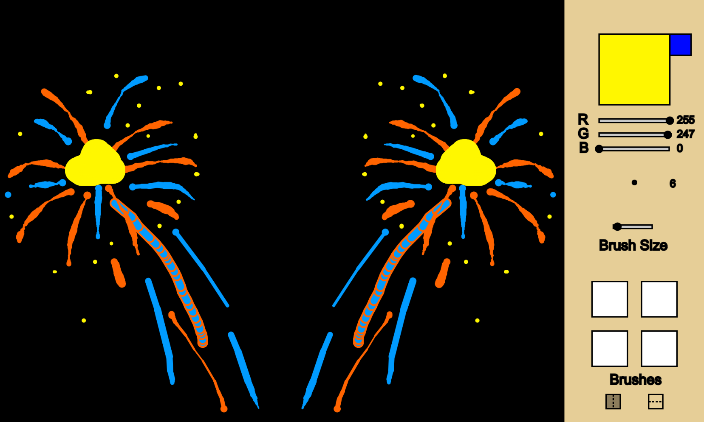
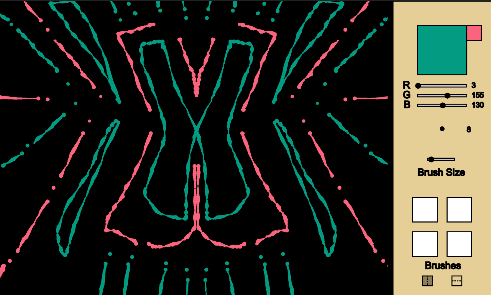
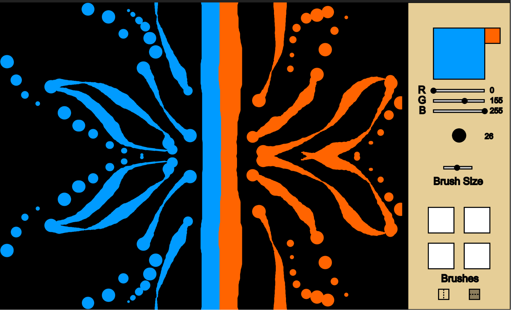
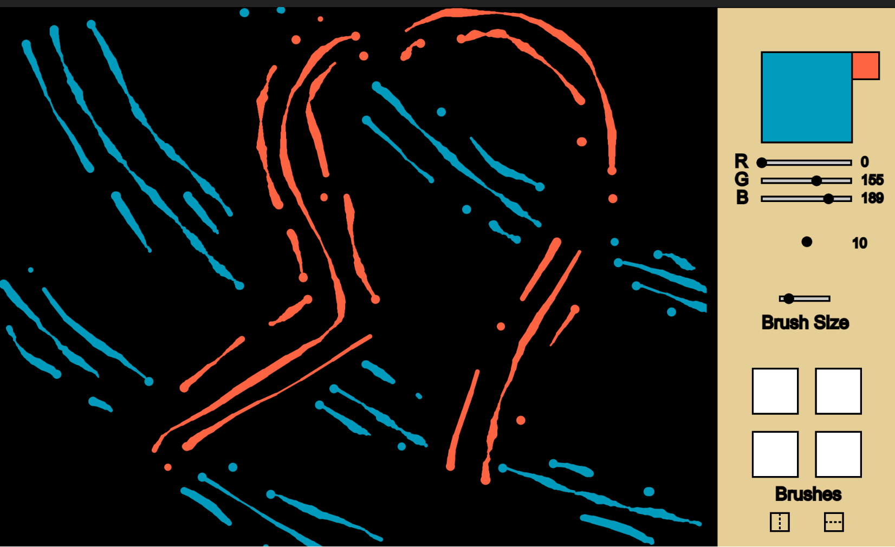
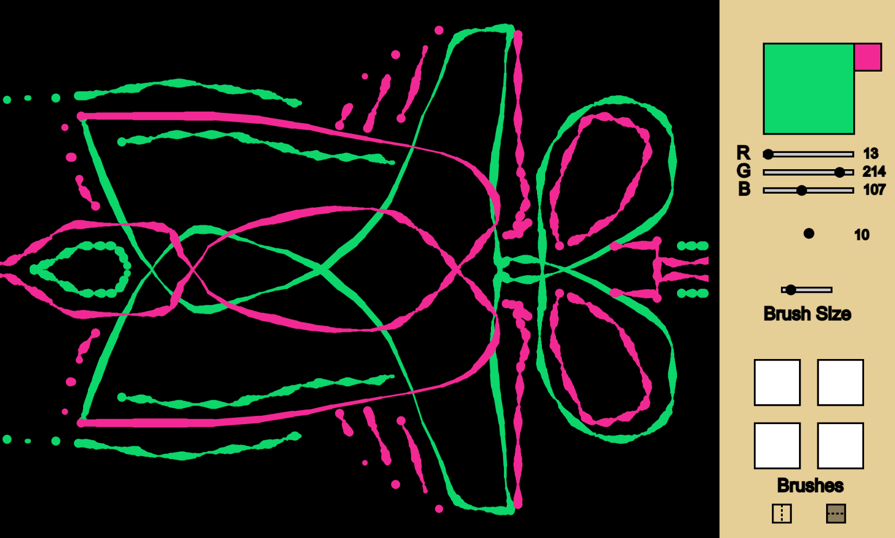

Project 1: Painter
Created: 9/20/23
Tags:
This was part of our first project for the class where we had to create brushes for a paint program. I wanted to try and create a form of interactability to the program so I created functions like sliders and buttons.
Even though the editor took the most to create, I think the mirror toggles were probably the best feature I made. The process was super simple in which I would take the user's current position compared to the halfway point of the canvas and invert the position and have it draw there as well. I ended up using this feature to make some really cool pieces of art.

I also created multiple hotkeys for different commands like filling the canvas with a color, numbers for different brushes, switch to complementary color, and switch between rgb and grayscale colormodes.
   